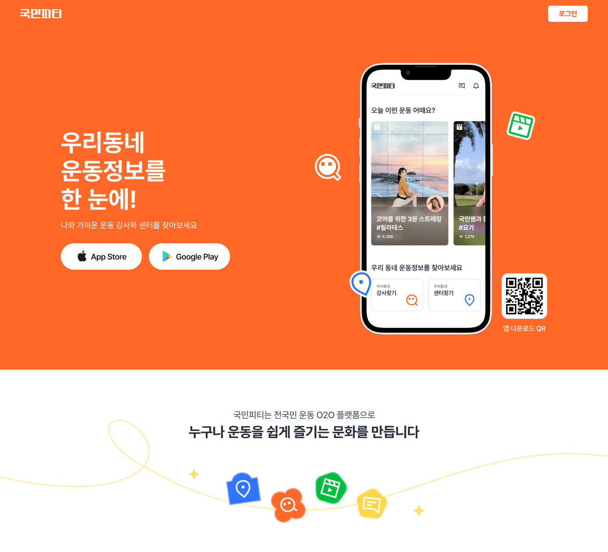

국민피티 웹
2021.07 - 2023.10

📌 Summary
국민피티 서비스 소개 및 앱 내 일부 기능 지원을 위한 웹사이트
- •국민피티는 사용자의 위치 기반으로 운동 시설과 강사를 연결하는 O2O 플랫폼
- •기존 앱 중심에서 일부 기능을 웹 플랫폼으로 구축 필요
- •디자인 시스템과 스토리북 도입으로 UI/UX 일관성 및 개발 생산성 향상
- •SEO 최적화 및 로딩 속도 개선으로 검색 노출 및 사용자 경험 향상 (LCP 2.5초 ⇒ 1.5초)
- •GA와 페이스북 픽셀을 적용해 사용자 행동 분석 및 서비스 개선
- •웹에서도 OAuth 로그인(구글, 카카오, 애플) 및 회원가입을 구현하여 앱 일부 기능 지원
🤔 Background
- 국민피티 서비스는 기존에 앱 중심으로 운영 되었지만 웹을 통해서도 사용자들이 정보를 얻고 서비스를 이용할 수 있도록, 본격적인 웹 플랫폼을 구축할 필요가 있었습니다. 초기 국민피티 웹 사이트는 UI가 일관되지 않았고, 새로운 기능을 추가할 때마다 디자인 요소가 중구난방으로 적용되는 문제가 있었습니다. 또한, 메인 페이지는 서비스 소개를 위해 큰 이미지를 많이 포함하고 있어 페이지 로딩 속도가 느려지는 문제도 있었습니다.
🔍 Meaning
•디자인 일관성을 위한 디자인 시스템 도입
- 페이지마다 디자인이 다르게 적용되는 문제를 디자이너 분들과 함께 고민했고, 그 결과로 UI 일관성을 위해 디자인 시스템을 도입하기로 결정했습니다. 디자인 시스템 구축 초반에는 디자이너 분들과 의논해야할 부분이 많아서 많은 시간을 쏟아야 했지만 구축 후에는 개발 시간 현저히 단축되었고, 특히 QA를 하는 시간이 많이 단축되었습니다.
- 디자인 시스템을 구축하면서, 컴포넌트의 동작과 사용 사례 등을 구체적으로 정의하고 문서화의 필요성을 느꼈습니다. 이를 위해 컴포넌트 문서화 기능이 있는 스토리북을 도입하였고, 스토리북을 통해 디자이너와 화면을 보며 피드백을 주고받을 수 있었습니다. 또한, 디자이너들이 각 컴포넌트를 자세히 검토할 수 있는 기회를 가지게 되어 협업을 더 원활하게 진행할 수 있었습니다.
•메인 페이지 성능 및 검색 최적화
- 서비스 소개를 위한 이미지가 많은 메인 페이지의 로딩 속도를 개선하기 위해, Next.js의 이미지 태그와 레이지 로딩 기능을 활용했습니다. 개선 전에는 레이아웃 쉬프트가 빈번하고 LCP가 2.5초였으나, 개선 후에는 레이아웃 쉬프트가 완전히 사라졌으며, LCP를 1.5초로 단축할 수 있었습니다.
- 검색 노출을 원활하게 하기 위해 SEO 최적화를 진행했습니다. 이를 위해 이미지의 alt 속성, 메타 태그, 정적 페이지 생성 등을 적용하여 검색 엔진 노출을 강화하였습니다.
•사용자 행동 분석을 위한 데이터 수집
- 향후 서비스 방향 및 개선점을 위한 사용자 행동 분석이 필요했기 때문에, 이를 위해 GA(Google Analytics)와 페이스북 픽셀을 삽입하여 데이터를 수집하고 분석할 수 있도록 하였습니다.
•앱의 일부 기능을 웹에서도 지원
- 웹에서도 OAuth 로그인(구글, 카카오, 애플) 및 회원가입을 구현하여, 앱에서 제공되는 일부 기능(강사등록, 회원정보 수정 등)을 웹에서도 사용할 수 있도록 하여 사용자 편의성을 강화했습니다.
👩🌾 Responsibilities
기여도 : 70%
- •디자인 시스템 구축
- •메인 페이지
- •로그인(일반, 소셜)/회원가입
🔨 Technology Stack(s)
- React
- Typescript
- Next.js
- Redux
- Redux-saga
- Styled-components
- Storybook